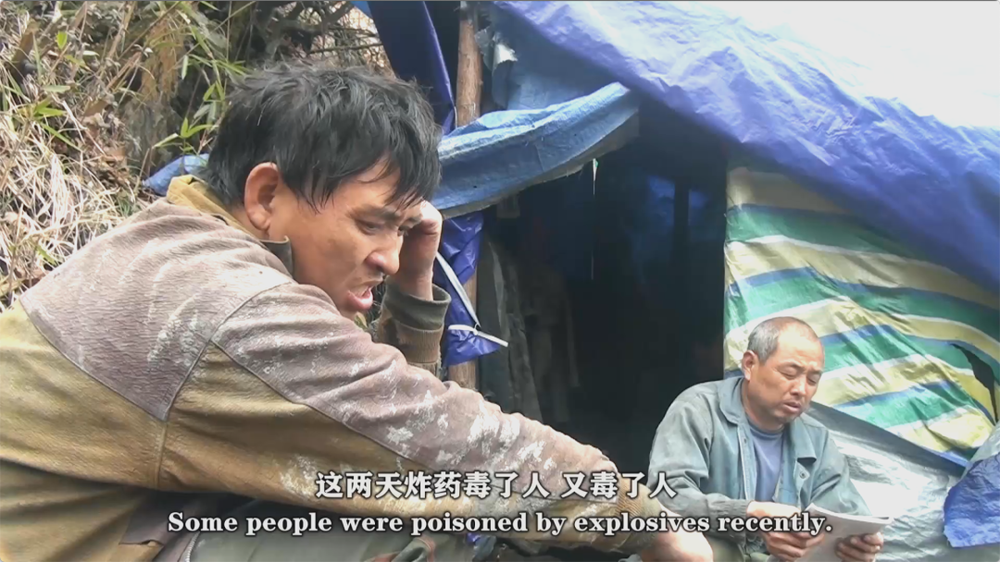
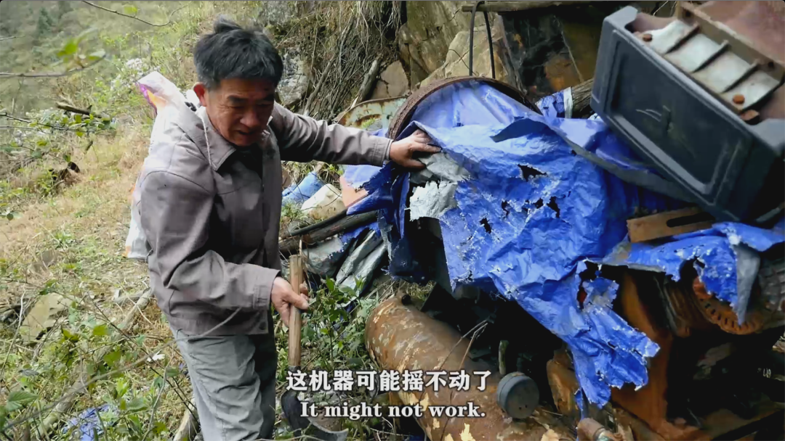

本文原发于三号放映厅公众号，现将其存档放出
让它消失，就解决了？
星期二, 四月 7, 2020
8:12 上午
让它消失，就解决了？
写在前面
几天前，独立影像圈子里发生了一场**「蝴蝶效应」**。
影迷应该都猜到我说的是哪件事情了。
3月29日，晚上临睡前，我偶然在微博上刷到博主@苏北人的一条微博：
仔细翻了翻评论后，才了解此话的缘由。
原来是一部聚焦“底层”的公益纪录片**《矿民、马夫、尘肺病》**因为题材敏感，无法在主流媒体进行传播，更没办法公映。
再加上一直以来独立电影人的创作处境艰难，资金不足。
为了能传播出去，让更多的人去关注底层群体的困境。
无奈之下，导演蒋能杰只好在豆瓣蹲着，给每一个标记“想看”的人私信发资源，附上了一段话，还细心地说明了下载教程。
很多人被导演这种坚持的行为打动了，于是开始在微博上主动转发扩散，互相传递资源。
轻轻扇动几下翅膀就这样引发了一系列连锁反应。
很快，这部纪录片在第二天被顶上**“豆瓣实时榜第一”**。
标记人数从最初的几百个到现在（发文前）“6673人看过，4.5万人想看”，开画9分，目前回落到8.7分。
那天晚上我和一个从事独立电影相关工作的朋友聊起这个事。
我说我很感动。
他说他也是。
我说我也觉得很可悲。
他说他也是。
《矿民、马夫、尘肺病》
这是一部聚焦**“尘肺病”**的公益纪录片。
在我国公布的十大类职业病中，尘肺病属于发病率最高的一类，我国也是尘肺病患者最多的国家之一。
我特地去查了一下近年的数据：2018年全国职业病报告中显示，尘肺病全年新增病例19468例，患得比例高达83%。
通常来说，这种病是由于在职业活动中防护不到位，导致长期吸入生产性粉尘并且在肺内滞留，持续病变所引发的全身性疾病。
轻者咳嗽、胸痛，重者呼吸困难、完全丧失基本的劳动能力，目前还没有研发出可以根治尘肺病的特效药。
而患得这种病的，大多是矿民。
尽管对于他们来说，尘肺病的危险程度并不亚于矿难，但他们在劳动力市场上处于劣势地位决定了他们别无选择。
为了养家糊口，甚至只是为了吃口饭活下去，只能拿命换钱。
导演的爸爸就是尘肺病患者之一，他的家乡湖南湘西南地区由于经济发展缓慢，矿产资源丰富，因此也成为了尘肺病患病率很高的地区。
从2010年起，蒋能杰扛起摄影机开始跟拍了三位矿民。
拍一阵子，出去接活赚点钱，回来再拍，就这么断断续续拍了八年，最终剪成了这部82分钟时长的作品。
片中的几位主角也都是生活在他周围的人，其中马夫是他的爸爸，牵牛是他的堂弟。
虽然片子的画质很差，前半段剪辑得也有些散乱，但依然不妨碍它夹杂着一种粗砺而尖锐的真实。
从很多地方你都能感受到导演是在以一种平视的角度去记录他们。
他将自己完全置于矿民群体之中，让镜头跟随着他们的生活一起移动，跟着他们上山下山，钻进矿洞。
在这份真实之下，还是导演对底层群体的尊重。
他没有批判或赞扬这些人，也没有刻意渲染他们的悲苦。
比如片子的最后，即使是面对人们在亲人离世时的那种悲痛欲绝，摄影师也只是用一个固定镜头远远地在一旁记录这些人难以自控的本能反应。
我想导演之所以拍这些，不是为了让那些比他们站的更高的人低头同情踩在脚下的人，为底层人民与不幸的抗争而感动。
他只是试图去建立一种理解和反思。
告诉你那些你不相信的事情是真实存在的，让你看到如今在我们的国家仍然有人过着一种这样的生活。
关于“底层”我们之前已经用肯·洛奇的两部电影聊的很清楚了，今天就不再对底层群体进行过多的讨论。
我甚至觉得以往那种悲天悯人的情绪在这部片子面前都显得很廉价。
就如同导演克制的镜头一样，接下来我也只是把我所看到的那些被主流社会所忽视、被边缘化的人们的故事讲给你们听。
因为他们跟我们一样，是人，不是社会发展的牺牲品。
一
矿民
我们就按照片名的顺序，先从矿民讲起吧。
片子里的矿民姓刘，别人都叫他“牵牛”，牵牛从17岁起就辍学回家，跟着父亲一起在山上开矿了。
当矿工纯粹是个体力活。
整天就是钻在矿洞里把墙上的矿石打下来，再装上小车再运出来，就这么不停地进进出出。
不干活的时候，他们都呆在用石头垒起来的简易房子里聊聊天，打打牌，蹲在地下做些粗茶淡饭围在一起吃。
晴天还能吃上新鲜的菜，下雪天送菜的上不了山，实在没得吃了就把一种类似老鼠的动物皮扒了烤着吃。
此时，牵牛的工友扭头过来对着镜头无奈地说：“我累的半死，又没赚到什么钱“。
然后转过身推着矿车继续向前走去。
看得出来，起初这些人面对突如其来的镜头，有些恐惧和防备。
每次当摄影机靠近他们的时候，有人就开玩笑大喊着：“搞整顿的来了”，也有人嘴里正儿八经地念叨着：“真的不要去拍，这东西不能拍”。
倒也不是吓唬人，他们嘴里提到最多的“整顿”二字，的确是隔三岔五常发生的事。
虽说是整顿，其实根本谈不上。
不过是花钱请了一些“烂仔”过来吓唬他们，有些时候那些人不打一声招呼就直接烧了他们住的地方，砸了他们的机器。
不过比起工作的时候随时都能要了命，这些都是还能应付的“小事情”。
开矿洞需要炸药，但真炸药又买不到，最后只能用带有毒性的假炸药。
牵牛讲起之前有个矿洞出了事，老板急着让进去救人。
结果工人们**“进去一个倒一个”**，四五个人就这样活活被毒死，最后政府补偿了几百万才息事宁人。

这不，正说着，昨天下面的矿洞又发生了一场一模一样的矿难，毒死了好几个人。
人死了得往山下抬，但抬死人得花钱。
有的人为了省钱，只把活着的往山下抬，“死的就不抬了”。
矿民们聊起这些的时候，就像聊家常似的看起来格外轻松，好像见得多了，对于**“死亡”**这件事已经麻木了。
但你要说他们不害怕也是假的。
牵牛索性连看都不去看，“眼不见为净，我没看见，我一个人睡觉就不怕”。
山上积着一层厚厚的雪，眼看着就要过年了。
有的人抽空跑去山头跟自己的老婆打了个电话，多余话也不说，就是通知一声回家的日期，然后又继续钻进矿洞里。
他们来不及去思考什么，也顾不上关心那么多。
唯一在意的不过是作为“人”最基本的肉体欲望和生存欲望。
脑子里算计着能赚多少钱，嘴里唱着“讨亲要讨大奶婆”。
只不过每天无论是在狭窄矿洞里面，还是走出来，生活好像都没什么太大的差别。
一样地黑暗，压抑，弓着背，弯着腰。
要是没个灯照着，根本看不见一点光。
二
马夫
马夫蒋美林也干着跟开矿有关的活。
2007年，他和妻子从广东回到家乡后买了几匹马，开始了运送矿物和非法开采矿洞的营生，偶尔也冒风险送一送炸药。
在片子的前半段里，关于马夫的镜头大多都是阴暗的。
为了要防止被那些整顿的人抓住，他们经常半夜两三点就得出发，牵着马顺着崎岖的山路往上走，一走就是两三个小时。
有的时候货都送到了，天才蒙蒙亮。
虽然看起来如此辛苦，但从当时的价格“35块钱运100斤的矿”算下来，压根赚不到几个钱。
即便马夫们的身上没有背货，你也能感觉到，他们和马一样，全身负重。
好景不长，大概是在2012年左右，矿价下跌，物价上涨，开矿的成本变得越来越高，再加上政府对非法开采加强了整顿，许多矿洞都倒闭了。
彼时，牵牛的矿洞也出了矿难，全家举债赔偿。
没人开矿也就没有货可运，马夫蒋美林随之丢了工作。
他和妻子只好回家种地，然后用之前送货赚来的钱再借了些，不为别的，就为盖个新房子给两个儿子娶媳妇。
得空了，蒋美林还会再上山到以前辛苦工作过的矿洞去看看，砍砍杂草，敲一敲生了锈的旧机器。

尘肺病的潜伏期非常长，发病又滞后，它会从肺部开始一点点地击垮人的身体。
蒋美林是在1996年的时候查出来患得尘肺病的，直到2016年，他已经身患多种疾病，再也无法从事体力劳动了，只能在家休养。
聊起当时开矿的那些经历，马夫的儿子开玩笑说：“我爸这辈子运气不好，存不了钱”。
他们不知道自己可以怪谁，真要怪起来，就只能怪天命。
三
尘肺病
像他们这样长期在粉尘浓度高的矿洞里干活的人，极其容易患上尘肺病，可是这些人大概连书都没读过几年，根本不知道尘肺病是什么。
发现得早了，像马夫蒋美林那样的，还能通过治疗得以延缓。
一旦发现晚了，像蒋美林的工友赵品凤这种打矿打了二十年后，检查出来已经是晚期的，就只有在家等死。

如今到了从这个屋子走到另一个屋子就得马上吸氧的地步，赵品凤知道自己活不了多长时间了。
他让摄影师帮他拍一张寿相（遗像），想着**“多活一个月算一个月”。**
已经做好准备，毫无预兆地随时死去。
他也知道，对于他们这些被甩在最后面的人来说，上面颁布的那些所谓的政策再好，下面不落实，说什么都没有用。
这类职业病的工伤认定和补偿本就难度大，像同村那个诊断书上写着“由矽肺引起肺结核”的，拿到医院去，人家根本不给报销。
那一年，他申请低保领了900块，可在医院一天就要100块，治不起病，也没钱再供女儿上学，全家都靠着弟弟寄些钱撑着过下去。
生活就跟开玩笑似的。
原本是为了谋生才得上了这么一个“穷病”，现在又因病返贫，仿佛成了一个没有出路的死循环。
透过镜头，就这么眼睁睁地看着赵品凤头上戴的吸氧管从一根塑料管变成了一根绳子。
广播里播着最新的扶贫政策，把每一个活生生的人变成了数据。
另一头的他，身体每况愈下，连上个楼梯都很费力。
明明是同一个画面，却让我恍惚地以为是两个平行的世界。
那些电视机里念的、街道的宣传栏上写的，每一个听起来充满希望的词语，似乎都跟他们的毫无关系。
最终，赵品凤于2018年死在了一个停电、吸不上氧的夜里。
生死完全不由他自己，靠运气。
棺材合上的那一瞬间，亲人们瘫在地上痛哭着拍打棺材盖，妻子站在一旁不忍靠近。
他们还给他生前拍的那张寿相的背后，p上了一个天an门的背景。
写在最后
写完这篇文的时候，正好看到导演发了一条微博。
这应该不是导演第一次遇到这样的声音，也是实在忍无可忍才挂了出来。
他们认为导演拍的是**“负能量”，觉得“穷就是不够努力、不配活着”，声称“这种导演应该被抓起来”**，这种声音在我们号的留言区也不少见。
我们先不说这种恶意揣测导演心血动机行为是多大的恶。
我就想替导演问问你们这群人，你们真的觉得自己是在爱这个国家吗？
什么叫正能量，什么叫负能量？
我来告诉你们：
不管好还是坏，夸赞还是批评，说的是真话，那就是正能量。
坏的看不到，整天捂着别人嘴巴，蒙着自己眼睛唱赞歌，那才叫坏透了的负能量。
何为爱国？
爱它不是一种盲目的崇拜，不是去一味地歌颂感激，不是只允许宏大叙事的主旋律电影存在，不是把苦难美化成感动。
而是说真话，是关切每一个个体，是指出不足并且督促解决问题，然后防止下一次错误的发生。
一个国家由人民组成，你怎么样，决定了这个国家怎么样。
爱国的本质，是爱这个国家的人民，是对苦难保持痛感和共情，是对悲鸣学会低头和聆听，是小心自己不要被成为一个吃喝拉撒见死不救的动物。
是实事求是，是力所能及。
所以很显然，当你把同胞的苦难冷血地划入不该被关注的“负能量”的时候，你看似爱国，实则早已站在了爱国的对立面。
你们才是于这个国家最有害的人。
我们爱这个国家，所以我们才必须说出它的不足，希望它更好。
这是我们爱它的方式，我相信也是这部纪录片的创作者爱它的方式。
Ps：
最后，感谢导演用近十年的时间坚持记录，非常不容易。
如果你看到了这篇文，希望你抽时间去看看这部纪录片，只需要1个小时20分钟，不会浪费你太多时间，如果可以的话再推荐给身边的朋友看看。
我们写了这么多，也只是希望它能被更多人看到。
（本片的豆瓣讨论区）
...